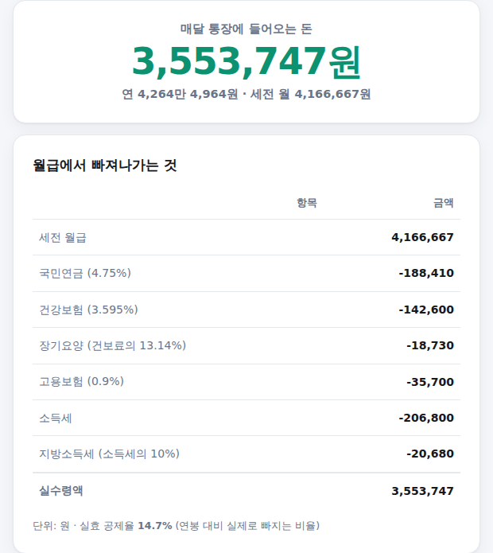
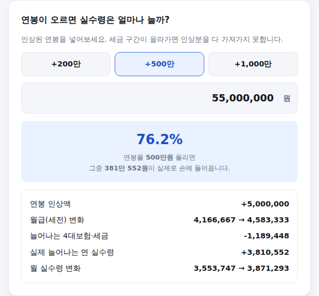

연봉 협상하거나 이직할 때 가장 궁금한 건 결국 "그래서 매달 통장에 얼마가 들어오나"입니다. 연봉만 넣으면 4대보험과 세금을 뺀 실수령액이 바로 나오는 계산기를 만들었습니다. 쓰는 법은 아래와 같습니다.
-
세전 연봉 입력
3,000만/4,000만/5,000만/7,000만원 버튼을 눌러 대략 맞춰도 되고, 직접 입력해도 됩니다. 퇴직금이 연봉에 포함된 회사라면 그만큼 빼고 넣으셔야 정확합니다 — 실제로 매달 받는 돈은 퇴직금을 제외한 금액 기준으로 계산되기 때문입니다.
연봉 입력 화면
-
부양가족 수와 식대 여부 선택
부양가족은 본인을 포함한 숫자입니다. 소득이 거의 없어 부양하는 배우자·부모님·자녀가 있다면 더해주세요. 인적공제(1인당 150만원)에 반영됩니다.
식대는 월 20만원까지 비과세라, 대부분의 회사가 이미 적용하고 있습니다. 비과세 식대는 세금뿐 아니라 4대보험료 계산에서도 빠집니다.
부양가족·식대 선택 화면
-
결과 확인 — 실수령액과 공제 내역
입력하는 즉시 위에 월 실수령액이 크게 나타나고, 아래 표에서 국민연금·건강보험·장기요양·고용보험·소득세·지방소득세가 각각 얼마씩 빠지는지 확인할 수 있습니다. 맨 아래 실효 공제율은 연봉 대비 실제로 빠지는 비율입니다.

결과 화면
-
연봉이 오르면 실수령은 얼마나 늘까
인상 후 연봉을 넣으면(+200만/+500만/+1,000만 버튼도 있습니다), 인상분 중 실제로 손에 들어오는 비율이 큰 글씨로 나타납니다. 세금 구간이 올라갈수록 이 비율은 낮아집니다 — "연봉 500만원 올랐는데 왜 이만큼밖에 안 늘지?"에 대한 답입니다.

연봉 인상 시뮬레이션 화면
급여명세서 숫자와 다를 수 있습니다
회사가 매달 원천징수하는 소득세는 국세청 간이세액표에 따른 임시 금액이고, 최종 세금은 연말정산에서 정해집니다. 이 계산기는 근로소득공제·인적공제·세율·근로소득세액공제까지 반영한 연말정산 기준 계산이라, 매달 명세서 숫자와는 다를 수 있습니다.
또한 자녀세액공제, 신용카드·의료비·교육비 공제, 연금저축·IRP 세액공제 등은 사람마다 달라서 반영하지 않았습니다. 실제 세금은 이 계산보다 줄어들 가능성이 큽니다.
계산은 참고용이며 세무 조언이 아닙니다. 기준: 2026년 4대보험 요율(국민연금 9.5%·건강보험 7.19%·장기요양 13.14%·고용보험 0.9%) 및 소득세법 공개 자료.